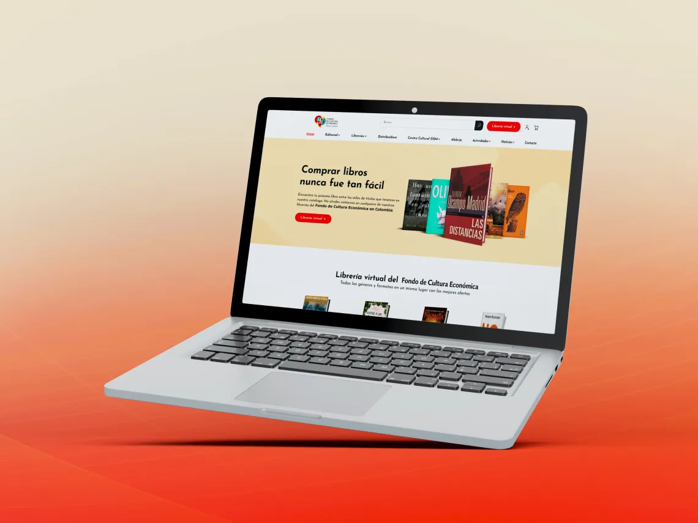

Rediseño del sitio web del Fondo de Cultura en Colombia
¿Por qué?
Para simplificar la navegación y el proceso de compra, ofreciendo una experiencia de usuario más intuitiva. Además, el rediseño buscaba elevar la percepción visual del Fondo de Cultura con una estética atractiva y coherente que reforzara su identidad digital.
¿A quién va dirigido?
Diseñado tanto para usuarios que buscan explorar o comprar libros, como para quienes colaboran activamente en la programación del Fondo de Cultura, ofreciendo una experiencia que satisface las necesidades de ambos públicos.
¿Cómo?
Iniciamos con una evaluación del sitio actual, identificando oportunidades clave para optimizar el diseño UX/UI. Luego, analizamos sitios de competidores para extraer mejores prácticas y tendencias, aplicando mejoras estratégicas en el diseño y la funcionalidad. Finalmente, se optimizó el contenido para SEO, aumentando la visibilidad del sitio y atrayendo más tráfico orgánico.
¿Mi rol?
Diseñador UI, responsable de crear el sistema de diseño y el prototipo de alta fidelidad en Figma.